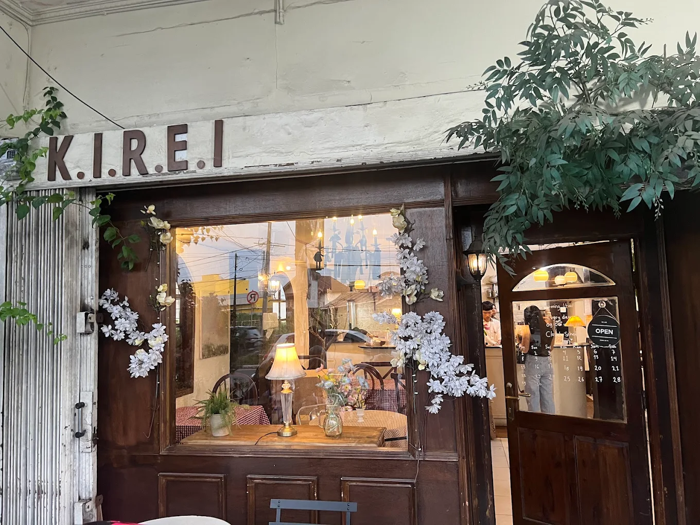
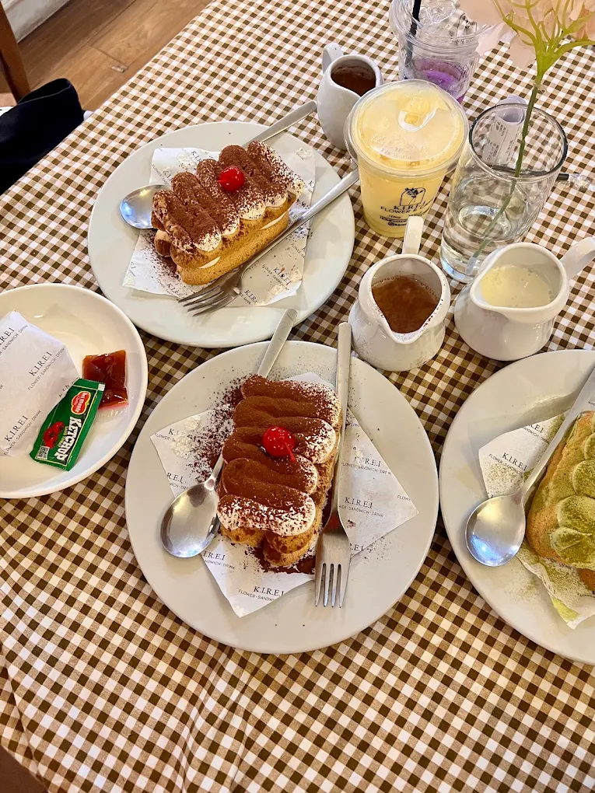
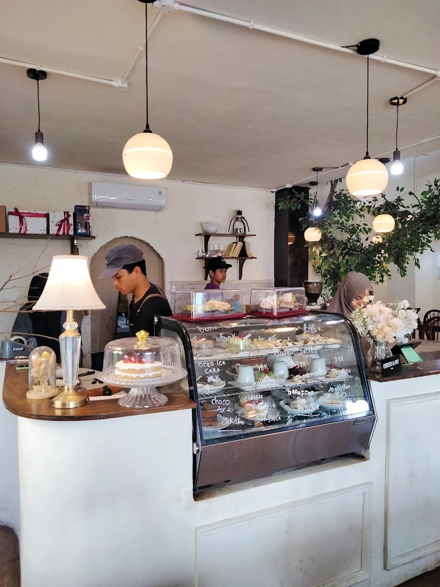

Membawa estetika ruang tenang dan kedamaian arsitektur Jepang ke tengah Kota Jambi. Tempat terbaik untuk bersantai, produktif bekerja, dan menikmati sajian matcha premium serta kopi artisan pilihan.
📍 Jl. Jend. Sudirman No.26, The Hok, Jambi



Opening Hours
Buka setiap hari untuk menemani hari produktifmu. 09:00 AM - 09:30 PM
The Atmosphere
Kombinasi harmonis interior putih bersih, aksen kayu natural, dan ketenangan penuh.
Crafted Quality
Menggunakan bahan baku Uji Matcha autentik Jepang dan biji kopi berkualitas tinggi.